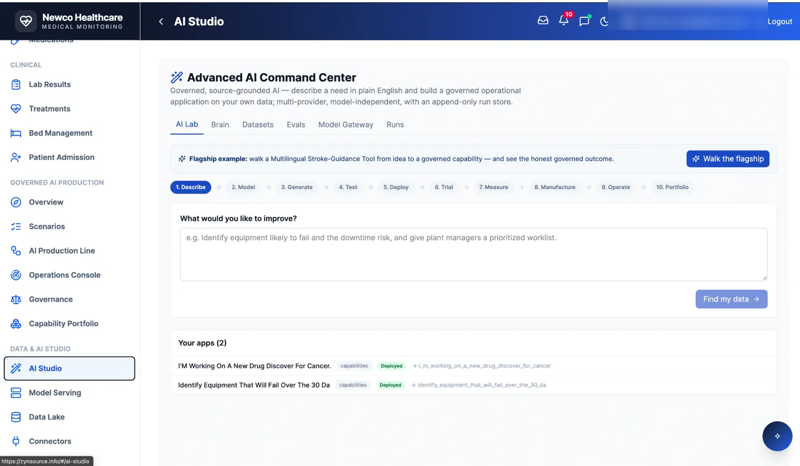

The integrated platform
Real capabilities. Real applications.
AI-assisted engineering is only the beginning. ZynSource brings together data, simulation, visual application creation and built-in governance—with subject-matter experts in the loop.

AI Studio
Guided design, model, generation and operational workflows.

Data Cloud Studio
Connected data, lineage and controlled transformation.

Visual Page Builder
Low-code and no-code experiences grounded in real workflows.

Governed AI Production
Review gates, testing and traceability through delivery.